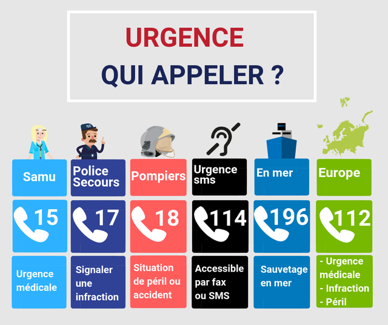

Apprendre qui appeler et quelles informations données lors d’un appel d’urgence est essentiel. L’objectif est donc que tu identifies le service le plus adapté à appeler selon la situation afin de savoir réagir au mieux si une situation comparable se produit chez toi, en cours, dans la rue ou lors de tes activités extrascolaires.
Nous sommes en plein milieu du village Gaulois, malheureusement tes amis ont beaucoup de soucis et il va falloir appeler de l’aide. Sais-tu qui appeler dans quel cas ?
Tu l’as compris, il y a plusieurs numéros pour appeler les secours mais à chaque situation il y a un numéro qui est plus adapté que les autres. Si tu te trompes, ce n’est pas grave, ils feront le lien entre eux mais les secours seront peut être un peu moins vite sur les lieux.
Voilà une fiche récapitulative des numéros, prends le temps de bien les retenir, ça peut être utile et pas seulement lors des activités de scoutisme 